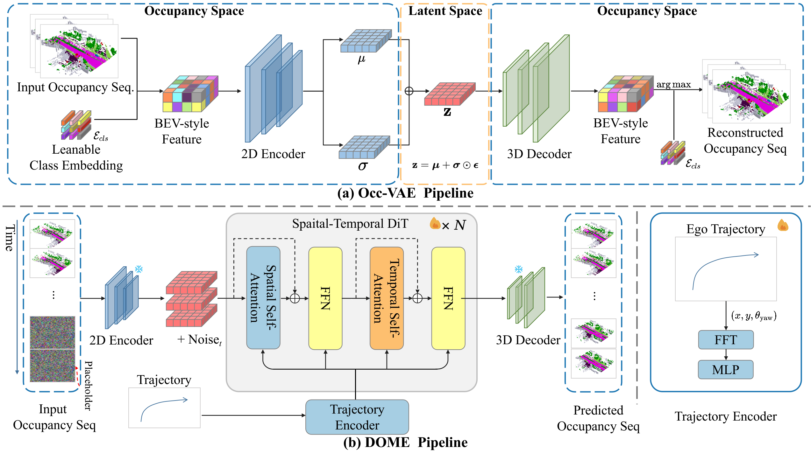

We propose DOME, a diffusion-based world model that predicts future occupancy frames based on past occupancy observations. The ability of this world model to capture the evolution of the environment is crucial for planning in autonomous driving. Compared to 2D video-based world models, the occupancy world model utilizes a native 3D representation, which features easily obtainable annotations and is modality-agnostic. This flexibility has the potential to facilitate the development of more advanced world models. Existing occupancy world models either suffer from detail loss due to discrete tokenization or rely on simplistic diffusion architectures, leading to inefficiencies and difficulties in predicting future occupancy with controllability. Our DOME exhibits two key features:(1) High-Fidelity and Long-Duration Generation. We adopt a spatial-temporal diffusion transformer to predict future occupancy frames based on historical context. This architecture efficiently captures spatial-temporal information, enabling high-fidelity details and the ability to generate predictions over long durations. (2)Fine-grained Controllability. We address the challenge of controllability in predictions by introducing a trajectory resampling method, which significantly enhances the model's ability to generate controlled predictions. Extensive experiments on the widely used nuScenes dataset demonstrate that our method surpasses existing baselines in both qualitative and quantitative evaluations, establishing a new state-of-the-art performance on nuScenes. Specifically, our approach surpasses the baseline by 10.5% in mIoU and 21.2% in IoU for occupancy reconstruction and by 36.0% in mIoU and 24.6% in IoU for 4D occupancy forecasting.
 We introduce DOME, a diffusion-based occupancy world model. Our method consists of two main components: Occ-VAE and DOME. To align the world model with trajectory conditions, we present a trajectory encoder and a trajectory resampling technique, specifically designed to enhance the model's controllability.
Results are based on the same first frame but with different trajectory control.
BibTex Code Here